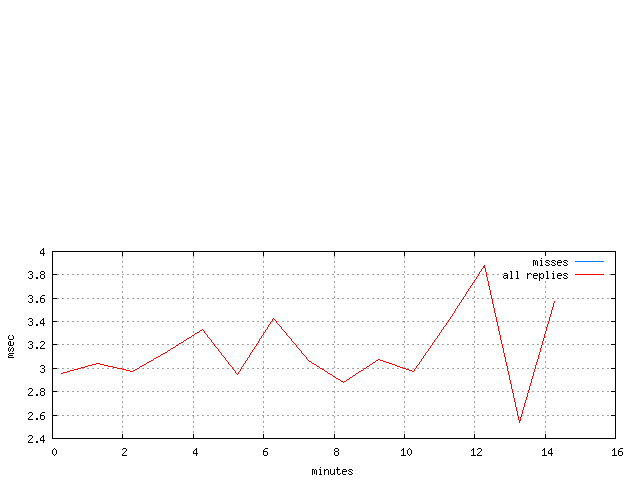

viaTransparentSmoothie: response times
This information is based on the client-side measurements.
| Response times trace |
|---|
|  |
| Object | Response time (msec) | Size (KBytes) | ||||
|---|---|---|---|---|---|---|
| Min | Mean | Max | Min | Mean | Max | |
| "some-content" response | n/a[1] | n/a[1] | n/a[1] | 0.26 | 13.22 | 150.11 |
| all response content types | n/a[1] | n/a[1] | n/a[1] | 0.26 | 13.22 | 150.11 |
| misses | 0.00 | 3.12 | 2515.00 | 0.26 | 13.22 | 150.11 |
| hits and misses | 0.00 | 3.12 | 2515.00 | 0.26 | 13.22 | 150.11 |
| cachable | 0.00 | 3.06 | 1679.00 | 0.26 | 13.21 | 150.11 |
| not cachable | 0.00 | 3.37 | 2515.00 | 0.29 | 13.25 | 128.36 |
| cachable and not | 0.00 | 3.12 | 2515.00 | 0.26 | 13.22 | 150.11 |
| fill | 0.00 | 3.06 | 1679.00 | 0.26 | 13.21 | 150.11 |
| all replies | 0.00 | 3.12 | 2515.00 | 0.26 | 13.22 | 150.11 |
| no auth | 0.00 | 3.12 | 2515.00 | 0.26 | 13.22 | 150.11 |
No events observed for the following statistics: "foreign" response, "bodiless" response, "unknown" response, hits, ims/200, ims/304, all ims, FTP active, FTP passive, FTP all modes, reload, range, abort, redirected request, reply to redirect, HEAD, POST, PUT, CONNECT, all non-gets, page, useful proxy validations, useless proxy validations, all proxy validations, SOCKS hits, SOCKS misses, SOCKS hits and misses, SSL hits, SSL misses, SSL hits and misses, FTP hits, FTP misses, FTP hits and misses, all auth, tunneled, custom.
The 'Reply object' table provides response time and response size statistics for many classes of transactions and for so-called pages.
Note that some classes are a combination of other classes. For example, the 'all ims' class contains transactions with If-Modified-Since requests that resulted in either '200 OK' (the 'ims/304' class) or '304 Not Modified' (the 'ims/304' class) responses.
Some statistics may not be available because either no objects of the corresponding class were seen during the test or no facilities to collect the stats exist for the class. The former can be verified using a 'Reply stream' table.
A similar table covering request messages is available elsewhere.
| Byte Latency | Written (msec) | Read (msec) | ||||
|---|---|---|---|---|---|---|
| Min | Mean | Max | Min | Mean | Max | |
| Last request byte | 0.00 | 0.57 | 998.00 | 0.00 | 0.00 | 19.00 |
| First response byte | 0.00 | 0.00 | 19.00 | 0.00 | 0.65 | 999.00 |


The 'first response byte' latency is the time it took Polygraph to read (or write) the first response byte. The timer starts when the transaction starts. The timer stops when the server writes the first response byte to the TCP socket or the client reads the first response byte from the socket.
Similarly, the 'last request byte' latency is the time it took Polygraph to read (or write) the last request byte. The timer starts when the transaction starts. The timer stop when the client writes the last request byte or the server reads the last request byte.
Usually, more than one byte is read or written in one I/O operation, but a single-byte I/O is sufficient to stop these latency timers. Only HTTP-level bytes can stop the timers. Low-level content exchanged during TCP or SSL handshakes and negotiations has no effect. These stats are collected for basic transactions only.